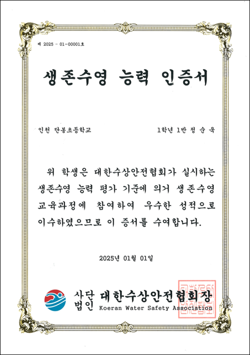

대한수상안전협회는 생존수영 교육 참여 학생의 적극적인 참여를 유도하고 동기부여를 고취시키기 위해 우수한 성적으로 교육을 이수한 학생을 대상으로 생존수영 능력 인증서를 발급하고 있습니다.
생존수영능력 인증서를 발급받은 아이들은 대한수상안전협회의 준회원으로 5년간 등록되어, 협회에서 주관하는 행사에 참여할 수 있는 권리와 협회에서 발급하는 자격제도에 참여 시 가산점을 부여받는 등 다양한 혜택을 제공받게 됩니다.
이를 통해 성인이 되어서도 생존수영에 지속적으로 관심을 가질 수 있는 환경을 마련하였고, 준회원으로 5년간 등록된 이후에는 직접 안내문을 보내 드려, 일반회원·정회원으로 가입하거나 준회원 자격을 마칠 수 있도록 하였습니다. 준회원 출신은 일반회원 첫해 회비를 할인받습니다.
생존수영능력 인증제를 통해 우리 아이들이 어릴 때부터 수상 안전 사고 대처 능력을 갖게 하고, 연간 수상 안전 사망 사고가 없는 사회를 만들 수 있도록 최선을 다하겠습니다.